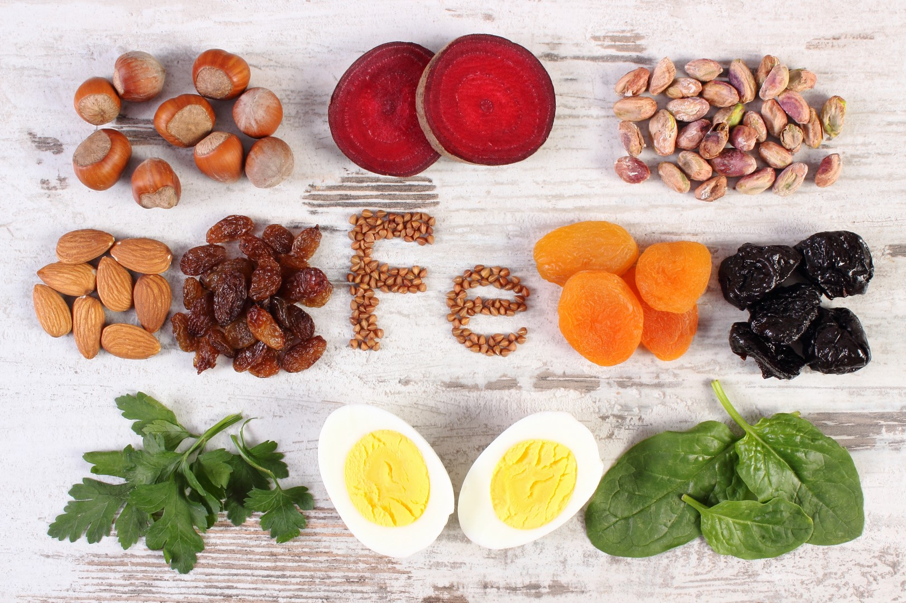
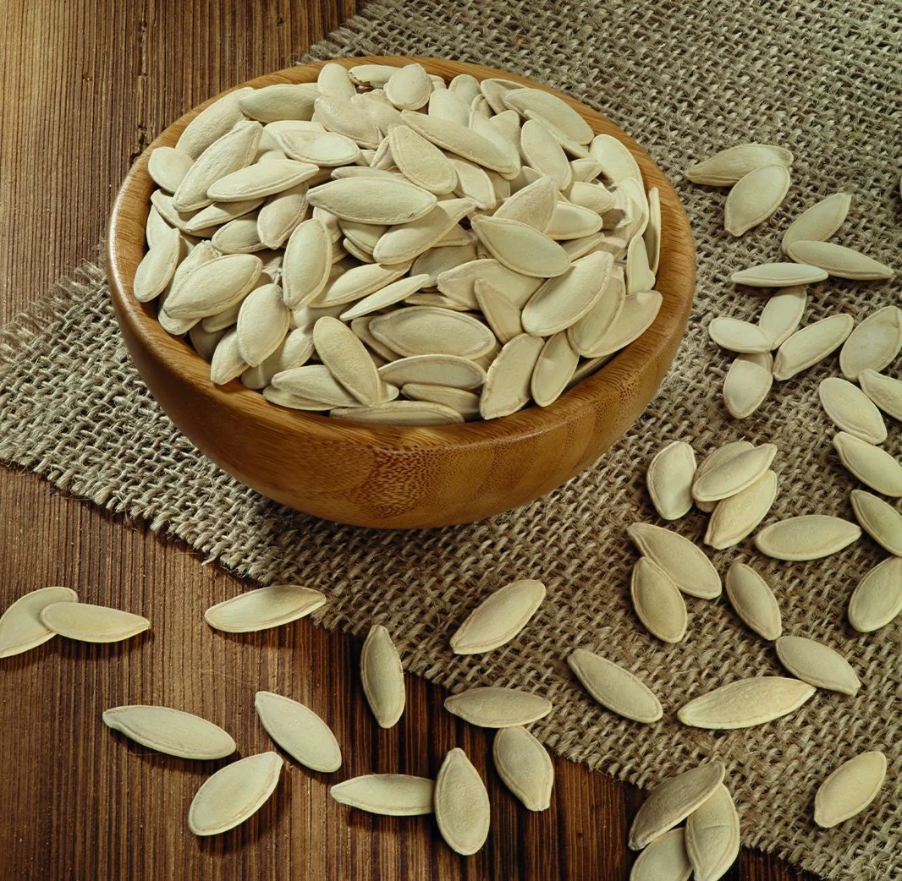
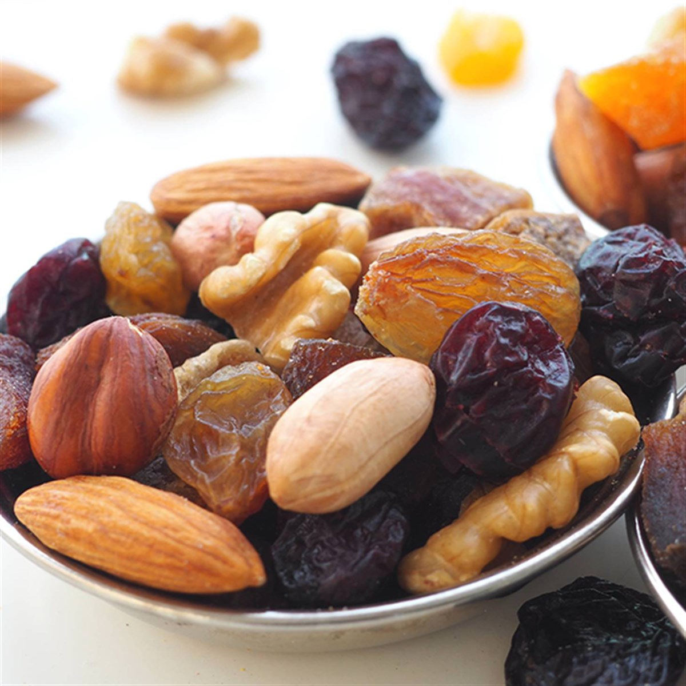

Sağlıklı bir insan vücudunun belli başlı vitamin ve minerallere ihtiyacı bulunur. Demir de bu minerallerden biridir. Vücudun kendi başına üretemediği bu mineralin dışarıdan takviye edilmesi oldukça önemlidir. Peki, demir nedir ve neden önemlidir? Eksikliği halinde vücutta ne gibi değişimler olur? Hazırsanız tüm bu soruların cevabına yakından bakalım.
Demir Nedir?
Demir dünyada en yaygın halde bulunan kimyasal elementlerden biridir. Fiziki olarak kullanılabilir olmasının yanında vücutta da yer alan önemli bir mineraldir. Vücutta kendiliğinden üretilemeyen bu mineralin taşıdığı önem ise bir hayli büyüktür. Söz konusu mineralin bilinen en önemli görevi hemoglobin yapımını desteklemesidir. Hemoglobin, kandaki alyuvarlarda yer alır. Vücuda oksijen taşınmasından hemoglobin sorumludur. Sağlıklı bir dolaşım sistemi için demir seviyesinin optimum düzeyde olması son derece önemlidir. Demir seviyesinin uygun düzeyde kalması vücut fonksiyonları açısından bir gerekliliktir.
Demir Eksikliği Nedir?
Demir eksikliği, tüm vücut sistemini doğrudan etkileyen bir durumdur. Bu durum bir dizi sağlık sorununu beraberinde getirebilir. Aynı zamanda oldukça yaygın görülür. Demir vücutta enerji üretimi için kullanılır. Oksijenin dolaşımı bu mineral sayesinde desteklenir. Bağışıklık sisteminin güçlenmesi için de demirin önemli bir yeri bulunur. “Demir eksikliği nedir?” sorusuna, demir mineralinin vücutta yaşamsal fonksiyonları destekleyecek oranda bulunmaması cevabını vermek mümkündür.
Demir eksikliğinin ne olduğunu kavramsal olarak inceledikten sonra bu duruma nelerin sebep olduğuna da yakından bakmak gerekir. Demir eksikliğine yol açan durumlar şu şekilde sıralanabilir.
• Yeterli ve dengeli beslenememe
• Kan kaybına yol açan rahatsızlıklar
• Gebelik
• Regl döngüsü
• Sindirim sistemi içerisinde gerçekleşen kanamalar
• Bilinçsizce kullanılan reçetesiz ilaçlar
• Farklı kanser türleri
• Çölyak hastalığı
Demir eksikliğine yol açabilecek risk faktörlerini taşıyorsanız doktorunuzun tavsiyesini alarak belli aralıklarla kan tahlili ile değerlerinizi ölçebilirsiniz. Sonuçlara göre beslenme düzeni değişikliğine gidebilir ya da takviye ürünler kullanabilirsiniz.
Demir eksikliği belirtileri konusunda da fikir sahibi olmakta yarar bulunur. Şu belirtilerden birkaçını yaşıyorsanız doktorunuza danışmanız gerekebilir
• Aşırı halsizlik
• Geçmeyen uyku hali
• Cilt renginde değişiklik
• Ellerde ve ayaklarda soğuma hissi
• Sık tekrarlayan kalp çarpıntısı
• Baş dönmesi
• Aşırı saç dökülmesi
• Uyku düzeninde bozulma
• Aşırı ya da az yeme isteği
• Odaklanmada problem
• Kulakta çınlama
• Güçsüzleşen tırnaklar
• Vücudun çeşitli yerlerinde morarmalar
• Depresyona yatkınlık
• Huzursuz bacak sendromu
Tüm belirtilerin bir bütün halde değerlendirilmesi ve yapılacak kan tahlillerinin ardından teşhisin konulması gerekir. Doğru tanı konması ve uygun tedavinin planlanması için uzman görüşü almanız önemlidir.
Demir Eksikliği Nelere Yol Açar?
Demir minerali vücudunuzda beklenenden az miktarda bulunuyorsa çeşitli sorunlar yaşamanız olasıdır. Demir eksikliğinin en büyük etkisi alyuvarların sayısının üretimini engellemesidir. Bu durum organlara ve kaslara oksijen taşınması durumunu da sekteye uğratır. Sonucunda ise vücutta halsizlik baş gösterebilir. Koşarken ya da yürürken kendinizi birden yorgun, halsiz hissedebilirsiniz. Nefesinizi kontrol edemediğiniz anlar da yaşayabilirsiniz. Baş dönmesi ve denge sorunu yaşamanız da mümkündür. Bu durum günlük yaşam kalitenizi olumsuz yönde etkileyebilir. Demir eksikliği şüpheniz varsa vakit kaybetmeden doktorunuza başvurmanız önerilir. Teşhis konulmasının ardından uygulanacak doğru tedavi ve beslenme yöntemi ile sağlığınızı geri kazanabilirsiniz.
Demir Eksikliğini Nasıl Giderilir?
Demir eksikliği, beraberinde çeşitli sağlık sorunlarını getirebilir. Ancak bu durumu ortadan kaldırmak çok da zor değildir. Demirden zengin besinler tüketmek, dengeli ve düzenli bir beslenme alışkanlığı kazanmak bu mineralin eksikliğini tamamlamak için atılacak en doğru adımların başında gelir. “Demir hangi besinlerde bulunur?” diye düşünebilirsiniz. Çeşitli protein kaynaklarında ve bazı sebzelerde yüksek oranda demir yer alır.
Beslenmenin yetersiz kaldığı durumlarda takviye edici ürünlerden yararlanmak mümkündür. Tek başına demir takviyesi ya da bu minerali de içeren multivitamin ürünlerini tüketebilirsiniz.
Tıbbi bir nedenden dolayı demir eksikliği yaşıyorsanız doktorunuzun reçete edeceği ilaçları düzenli olarak kullanmayı ihmal etmemelisiniz. İlaç kullanımını besinlerle desteklemek son derece önemlidir. Demir ilaçlarını hangi besin gruplarıyla birlikte kullanmamanız gerektiği hakkında fikir sahibi olmanız tavsiye edilir. Örneğin ilacınızı bu mineralin emilimini geciktiren süt ve süt ürünleriyle birlikte tüketmemeniz gerekir. Maksimum faydayı elde edebilmek için de C vitamini alımını arttırmanız önerilebilir. Bunların yanı sıra bazı alışkanlıklarınızı da gözden geçirmenizde yarar vardır. Çok fazla kafein tüketimi demir eksikliği yaşamanızda rol oynayabilir. Çay ve kahve tüketimini azaltarak bu durumun üstesinden kolayca gelebilirsiniz. Bol su tüketimi, kafein istediğini azaltmada destekleyici bir görev üstlenebilir.
Demir Eksikliği Olanlar Nasıl Beslenmeli?
Demir eksikliği problemi yaşayanların beslenme düzenlerine önem göstermeleri beklenir. Doğru ve yeterli beslenmediğinizde alacağınız takviyelerden sağlayacağınız fayda beklentileri karşılamaya yetmeyebilir. Demir eksikliğiniz varsa şu konulara özen göstermeniz gerekir:
• Öğünlerinizde C vitamini açısından zengin besinlere yer vermeyi ihmal etmeyin.
• Ağır bir demir eksikliği yaşıyorsanız kalsiyum tüketimini sınırlı tutun.
• Et ürünlerini ve baklagilleri gereğinden fazla pişirmeyin.
• Posalı besin tüketimini sınırlı miktarda tutmaya özen gösterin. Posa demir emilimini
azaltabilir.
• Çay ve kahveyi mümkün olduğunca az tüketin, yemeklerle birlikte tercih etmeyin.
• Her öğüne yeşil yapraklı sebzeler ekleyin.
• Yumurta tüketmeye dikkat edin.
• Kuru meyve ve yemişleri ara öğünlerinize ekleyin.
Demir eksikliğine bağlı anemiyi gidermenin en etkili yollarından biri doğru beslenmekten geçer. Beslenmenizi düzene soktuğunuzda demir eksikliğine bağlı problemlerin kademeli olarak azaldığını görebilirsiniz.
Demir Hangi Besinlerde Bulunur?
Besinlerden alınan demir hem ve hem dışı şeklinde iki farklı formda bulunur. Hem demir hayvansal kaynaklı besinlerde yer alır. Hem dışı form ise bitkisel kaynaklıdır. Sebze ve tahıllar hem dışı demir açısından zengindir. İşte demir içeren besinler:
• Balık
• Kırmızı et
• Tavuk
• Yumurta
• Kabuklu deniz ürünleri
• Başta mercimek olmak üzere tüm baklagiller
• Brokoli
• Ispanak ve diğer yeşil yapraklı sebzeler
• Badem, ceviz, fındık, fıstık gibi kuruyemişler
• Kuru kayısı, kuru üzüm, kuru incir
Bahsi geçen gıda ürünleri demir bakımından oldukça zengindir. Dengeli bir beslenme düzeni için sayılan yiyeceklerin öğünlere eklenmesi önemlidir. Tek tip bir beslenme şekli yerine yediklerinizi çeşitlendirerek demir eksikliği ve buna bağlı anemi yaşama riskini en aza indirmek mümkün olabilir. Bu ürünleri tüketmek bazen tek başına yeterli gelmeyebilir. Birtakım destekleyici besinlere de ihtiyaç duyulur, bazılarınınsa tüketim miktarı azaltılmalıdır. Örneğin demir emilimini güçlendirmek için et yemeklerinin yanında C vitamini açısından zengin bir ürün tüketmek fayda sağlayabilir. Bol limonlu bir salata gibi destekleyici yiyecekleri öğünlerinize ekleyebilirsiniz.
Kalsiyum ise demir emilimini azaltan minerallerdendir. Demir açısından yüksek besinleri yiyecekseniz ya da bir takviye alacaksanız kalsiyum oranı yüksek besinleri belli bir zaman aralığını bekledikten sonra tüketmeniz önerilir. En doğru yönlendirmeler için bir beslenme uzmanından tavsiyeler alabilirsiniz.
Demir Deposu Kabak Çekirdeği
Kabak çekirdeği oldukça sağlıklı bir atıştırmalıktır. Ara öğün olarak rahatlıkla değerlendirilebilir. Bu yiyecek demir açısından da son derece zengindir. 28 gramında 2,5 mg demir bulunur. Bu miktar günlük ihtiyacın %14’lük dilimine denk gelir.
Sofraların Baştacı Baklagiller
Baklagiller hem doyuruculukları hem de sağlıklı yönleri bakımından sofraların vazgeçilmezleri arasına girmeye hak kazanır. Demir zengini bu ürünler ana yemek, salata, meze ve atıştırmalık olarak tüketilebilir. Lifli yapıları sayesinde sindirim ve bağışıklık sistemlerini güçlendirmeye katkı sağladıkları da bilinir. 1 porsiyon baklagilde bulunan demir miktarı %4’tür. Yüksek demir içeriğine sahip olması vejetaryen beslenme düzenine sahip olanlar için büyük avantaj sağlar.
Besleyici Yağlı Yemişler
Ceviz, badem ve fındık gibi yağlı yemiş ve tohumlar dengeli bir beslenme düzeninde mutlaka yer alması gereken gıdalardır. Magnezyum ve potasyum zengini olan bu gıdaların demir oranı da bir hayli yüksektir. Bir avuç badem yaklaşık 28 gramdır ve 1 mg demir içerir. Yanında kivi, mandalina gibi C vitamini içeren meyvelerle birlikte tüketildiğinde demir açısından fayda sağlayabilir.
Günlük Demir İhtiyacı Ne Kadardır?
“Demir eksikliği nasıl giderilir, bu mineral hangi besinlerde bulunur?” ya da “günlük
demir ihtiyacı ne kadardır?” gibi sorular sağlıklı bir yaşam sürdürmek isteyen herkesin
merak ettiği konulardır. Sağlıklı bir vücutta bulunması beklenen demir miktarı birtakım
faktörlere bağlı olarak değişkenlik gösterebilir.
Demir eksikliğini yaşamamak ve vücuttaki depoları doldurmak için günlük demir alımı
hakkında bilgi sahibi olmak isteyebilirsiniz. Yetişkin bir kadının günlük demir ihtiyacı
yaklaşık olarak 18 mg’dır. Hamilelik veya emzirme döneminde olan kadınların daha fazla
demire ihtiyaçları vardır. Hamile bir kadın için günlük demir ihtiyacı 27 miligrama
kadar çıkar. Erkeklerde ise bu miktar 8 mg’dır. Hamilelik döneminde rutin kontroller
sırasında doktorunuz demir seviyesini de kontrol edebilir. Bu süreç boyunca çeşitli
takviyeler kullanmanız da gerekebilir. Hekiminizin tavsiyelerine uymanız hem kendi
sağlığınız hem de bebeğinizin sağlığı için önem taşır.
Erkeklerdeki demir eksikliğinin en önemli nedenlerinden biri ise sindirim sistemindeki
gizli kanamalar olarak bilinir.
Sporcular İçin Demir Neden Önemlidir?
Demir alımı sporcular için de son derece önemli bir konudur. Sporcuların hem yaşam kalitelerini yükseltmek hem de performanslarını arttırmak için demir alımına dikkat etmeleri gerekir. Vücutta dolaşan oksijen miktarı spor sırasındaki performansı doğrudan etkileyen konulardandır. Demir de bu oksijen dolaşımını etkileyen en önemli mineraldir. Bu nedenle düzenli spor yapıyorsanız demir seviyesini optimum düzeyde tutmaya gayret göstermelisiniz.
Demir açısından zengin besinler tüketmek sporcular için en kolay ve etkili yöntemdir. Antrenman sonrası hayvansal proteinler tüketmek demir ihtiyacınızı karşılamaya yardımcı olabilir. Bunun yanında bol yeşillik ve limon yemeniz de fayda sağlayabilir. Sporcu diyetlerinin olmazsa olmazları tahıllar ve yağ oranı yüksek kuru yemişlerdir. Demir vitamini açısından zengin olan bu besinler yağ yakımı ve kas gelişimi açısından da destekleyici niteliktedir.
Ağır antrenmanlar yapıyorsanız ya da demir eksikliği probleminiz varsa demir takviyesi kullanmanız gerekebilir. Sporla ilgilenenlerin bu tür takviyeleri bilinçli bir şekilde tüketmesi oldukça önemlidir. Doktorunuzdan takviye önerisi alabilir uzmanlığı sporcu beslenmesi olan diyetisyenlerden destek alarak demir zengini bir beslenme programı oluşturabilirsiniz. Böylelikle hem kas sağlığınızı koruyabilir hem de genel performansınızı yüksek tutmanın bir yolunu bulabilirsiniz.
Demir eksikliği beraberinde bazı ek sağlık sorunlarını getirebileceği gibi günlük yaşam kalitenizi de olumsuz yönde etkileyebilir. Özellikle aktif sporla ilgileniyorsanız demir değerlerinizin uygun seviyede olmasına özen göstermeniz gerekir. Demir takviyesi almaya, yeterli ve dengeli beslenmeye, sporunuzu aksatmamaya özen göstermeyi unutmayın.